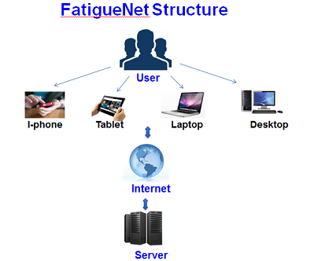

|
Outlook The FatigueNet Website provides a global user, free and easy access to fatigue analysis resources and modern interactive durability solution tools by means of multiple platforms such as desktop computers, laptops, tablets and smart phones. Features It is fully interactive and self-explanatory environment allows user to learn /review quickly the fundamentals of modern fatigue analysis methods and to perform dedicated durability calculations (no tutorial is needed). Also, our state-of-the-art notch solver and life prediction tools include unique, recently developed, deviatoric formulations of Neuber’s rule and SWT parameter. Subscription Will allow user to utilize the Full Version of the Notch Solver and Life Prediction Tools with enhanced functionality in comparison to the free Educational Version. Copyright © 2015 FatigueNet. All rights reserved. Disclaimer: Reasonable efforts have been made to deliver the highest quality information. But it is provided "as-is" and we make no warranties as to performance, merchantability, fitness for a particular purpose, or any other warranties whether expressed or implied. Under no circumstances shall FatigueNet , or any of its information providers, be liable for direct, indirect, special, incidental, or consequential damages resulting from the use or misuse of this information. The entire risk from using the results obtained from the information on this web site is assumed by user. |